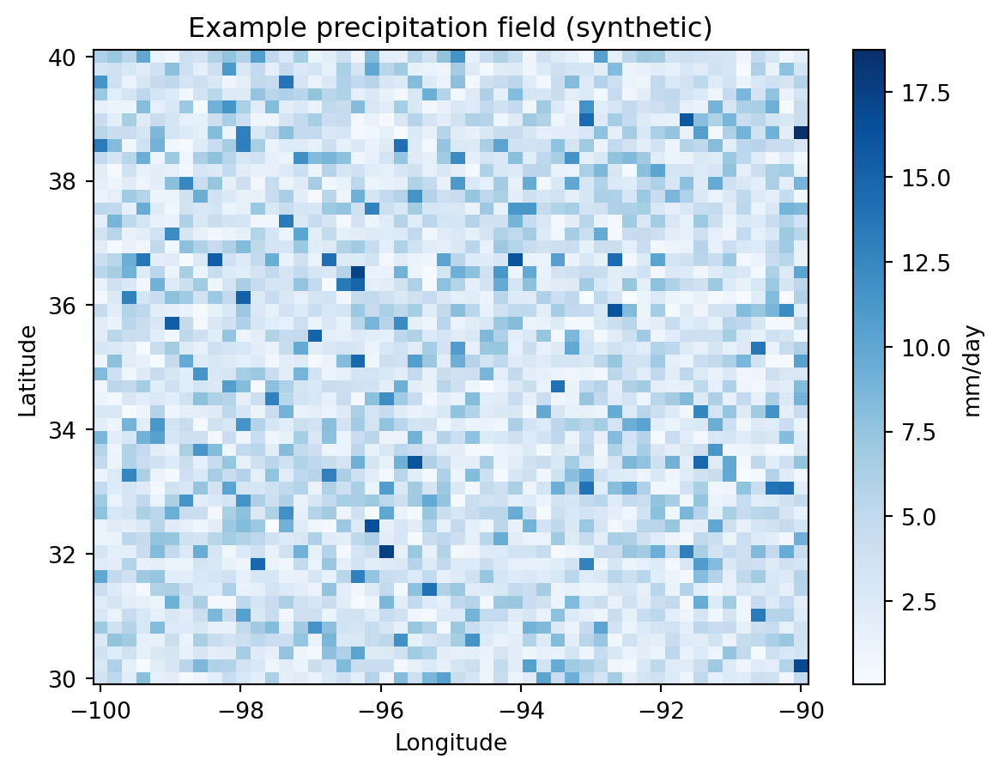

A template post showing how to mix narrative, code, static figures, and an interactive map in one page.
Published
September 8, 2026
What this workflow does
This is a template post. Replace this section with a short narrative explaining the scientific question, the dataset, and why the workflow matters — this is the part that makes the post more than just code. This is the kind of framing Matthew Heberger and Zack Labe both do well: a sentence or two of “why,” then the visualization, then the details.
Load and process data
Code
import numpy as npimport matplotlib.pyplot as plt# Synthetic stand-in for a real precipitation grid (e.g., PERSIANN, IMERG).# Replace this block with your actual data-loading code# (xarray.open_dataset, rioxarray.open_rasterio, etc.)rng = np.random.default_rng(0)lat = np.linspace(30, 40, 50)lon = np.linspace(-100, -90, 50)precip = rng.gamma(2, 2, size=(50, 50))
Static figure
Static figures (like the ones on Zack Labe’s site) are the easiest way to share results — just a matplotlib plot saved into the rendered page.
Code
fig, ax = plt.subplots(figsize=(7, 5))im = ax.pcolormesh(lon, lat, precip, cmap="Blues", shading="auto")ax.set_title("Example precipitation field (synthetic)")ax.set_xlabel("Longitude")ax.set_ylabel("Latitude")fig.colorbar(im, ax=ax, label="mm/day")plt.show()

Interactive map
For anything the reader should be able to click/pan/zoom, embed an interactive map. folium (Leaflet under the hood — the same library mghydro.com uses) exports directly to HTML that Quarto will embed inline.
/mnt/c/Users/EricShearer/Downloads/geospatial-workflows/geospatial-workflows/.venv/lib/python3.9/site-packages/folium/raster_layers.py:130: UserWarning: CartoDB tiles now require an API key. Please provide one to continue using the tiles. You can request the key at https://carto.com/basemaps/apikey/.
tiles = tiles.build_url(fill_subdomain=False, scale_factor="{r}") # type: ignore
Make this Notebook Trusted to load map: File -> Trust Notebook
Notes / reproducibility
Link to the full analysis code / notebook on GitHub here.
Note data sources and any preprocessing steps.
Mention any caveats or things you’d do differently next time — this is the kind of detail that makes a portfolio piece feel like real research rather than a polished demo.
Source Code
---title: "Example: Visualizing a Precipitation Field"description: "A template post showing how to mix narrative, code, static figures, and an interactive map in one page."date: 2026-09-08categories: [precipitation, remote-sensing, template]jupyter: python3---## What this workflow doesThis is a template post. Replace this section with a short narrativeexplaining the scientific question, the dataset, and why the workflowmatters — this is the part that makes the post more than just code. This isthe kind of framing Matthew Heberger and Zack Labe both do well: a sentenceor two of "why," then the visualization, then the details.## Load and process data```{python}import numpy as npimport matplotlib.pyplot as plt# Synthetic stand-in for a real precipitation grid (e.g., PERSIANN, IMERG).# Replace this block with your actual data-loading code# (xarray.open_dataset, rioxarray.open_rasterio, etc.)rng = np.random.default_rng(0)lat = np.linspace(30, 40, 50)lon = np.linspace(-100, -90, 50)precip = rng.gamma(2, 2, size=(50, 50))```## Static figureStatic figures (like the ones on Zack Labe's site) are the easiest way toshare results — just a `matplotlib` plot saved into the rendered page.```{python}fig, ax = plt.subplots(figsize=(7, 5))im = ax.pcolormesh(lon, lat, precip, cmap="Blues", shading="auto")ax.set_title("Example precipitation field (synthetic)")ax.set_xlabel("Longitude")ax.set_ylabel("Latitude")fig.colorbar(im, ax=ax, label="mm/day")plt.show()```## Interactive mapFor anything the reader should be able to click/pan/zoom, embed aninteractive map. `folium` (Leaflet under the hood — the same librarymghydro.com uses) exports directly to HTML that Quarto will embed inline.```{python}import foliumm = folium.Map(location=[35, -95], zoom_start=5, tiles="CartoDB positron")folium.Marker([35, -95], tooltip="Example site").add_to(m)m```## Notes / reproducibility- Link to the full analysis code / notebook on GitHub here.- Note data sources and any preprocessing steps.- Mention any caveats or things you'd do differently next time — this is the kind of detail that makes a portfolio piece feel like real research rather than a polished demo.